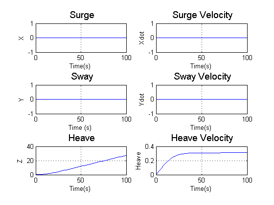
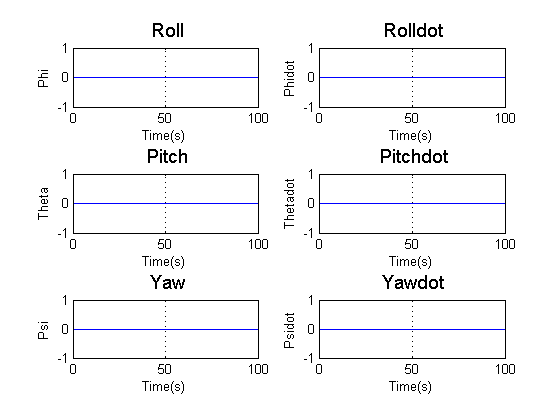
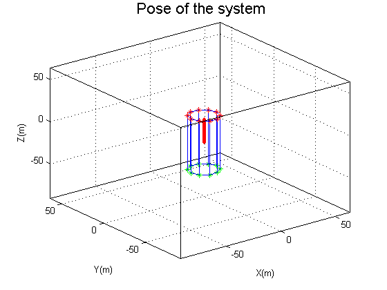

clear all
close all
clc
store_count=0;
dia=0.3;
rad=dia/2;
height=0.8;
vol=pi*(rad^2)*height;
rho_water=1000;
B=vol*rho_water*9.8;
W=B+1;
m=W/9.8;
rho_cyl=m/vol;
cg=[0 0 0];
cb=[0 0 0];
deg_to_rad = pi/180;
rad_to_deg = 180/pi;
q0=[10 10 10 0*deg_to_rad 0*deg_to_rad 0*deg_to_rad 0 0 0 0*deg_to_rad 0*deg_to_rad 0*deg_to_rad];
sim('cyl_sim')
t=tout;
out=q;
subplot(3,2,1),plot(t,out(:,1));
grid on
title('\fontsize{14} Surge');
xlabel('Time(s)');
ylabel('X');
subplot(3,2,3),plot(t,out(:,2));
grid on
title('\fontsize{14} Sway');
xlabel('Time (s)');
ylabel('Y');
subplot(3,2,5),plot(t,out(:,3));
grid on
title('\fontsize{14} Heave');
xlabel('Time(s)');
ylabel('Z');
subplot(3,2,2),plot(t,out(:,7));
grid on
title('\fontsize{14} Surge Velocity');
xlabel('Time(s)');
ylabel('Xdot');
subplot(3,2,4),plot(t,out(:,8));
grid on
title('\fontsize{14} Sway Velocity');
xlabel('Time(s)');
ylabel('Ydot');
subplot(3,2,6),plot(t,out(:,9));
grid on
title('\fontsize{14} Heave Velocity');
xlabel('Time(s)');
ylabel('Heave');
figure
subplot(3,2,1),plot(t,out(:,4)*rad_to_deg);
grid on
title('\fontsize{14} Roll');
xlabel('Time(s)');
ylabel('Phi');
subplot(3,2,3),plot(t,out(:,5)*rad_to_deg);
grid on
title('\fontsize{14} Pitch');
xlabel('Time(s)');
ylabel('Theta');
subplot(3,2,5),plot(t,out(:,6)*rad_to_deg);
grid on
title('\fontsize{14} Yaw');
xlabel('Time(s)');
ylabel('Psi');
subplot(3,2,2),plot(t,out(:,10)*rad_to_deg);
grid on
title('\fontsize{14} Rolldot');
xlabel('Time(s)');
ylabel('Phidot');
subplot(3,2,4),plot(t,out(:,11)*rad_to_deg);
grid on
title('\fontsize{14} Pitchdot');
xlabel('Time(s)');
ylabel('Thetadot');
subplot(3,2,6),plot(t,out(:,12)*rad_to_deg);
grid on
title('\fontsize{14} Yawdot');
xlabel('Time(s)');
ylabel('Psidot');
figure
final_plot_cyl(t,out(:,1:6),rad,height,10)
Warning: Using a default value of 2.0 for maximum step size. The simulation
step size will be equal to or less than this value. You can disable this
diagnostic by setting 'Automatic solver parameter selection' diagnostic to
'none' in the Diagnostics page of the configuration parameters dialog
Warning: The model 'cyl_sim' has the 'Configuration Parameters' > 'Data
Import/Export' > 'Signal logging format' parameter set to 'ModelDataLogs'. The
signal logging save format 'ModelDataLogs' will be removed in a future release.
To take advantage of new functionality, update models that use 'ModelDataLogs'
signal logging format to use the 'Dataset' format. For help with resolving this
and other upgrade issues, use the Simulink Upgrade Advisor.
  